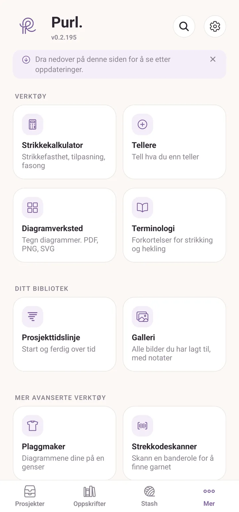

Kom i gang
Purl er en stille, reklamefri app for strikking og hekling. Oppskrifter, prosjekter og garn samlet på ett sted, på enheten din, uten konto. Laget for å virke uten nett (i sofaen, på flyet, på hytta uten dekning) og for å holde seg rolig unna mens du håndarbeider.
Installering
På iPhone og iPad ligger Purl i App Store. Søk etter Purl., med punktum, eller følg lenken fra purl.no.
På Android er Purl fortsatt i lukket testing. Du trenger en invitasjon før Play-oppføringen er synlig for deg. Noen testere kjører i stedet en fil de installerer for hånd; Android kan første gang spørre om du vil tillate installering av apper utenfor Play Store.
Det første Purl spør om
Ved en fersk installering får du ett skjermbilde, Velkommen til Purl, og ett spørsmål: Hva driver du mest med? Velg Strikking eller Hekling, og trykk Kom i gang.
Svaret er ikke en lås. Det avgjør bare hvilke begreper nye oppskrifter og nye prosjekter starter i, så en hekler ikke får strikkespråk på hvert nye skjermbilde. Du kan endre det senere i Innstillinger under Standardhåndverk, og hver enkelt oppskrift eller prosjekt kan være det andre håndverket.
Velg håndverket du driver mest med. Det setter bare utgangspunktet.
De fire fanene
Nederst på skjermen:
- Prosjekter: ting du lager, planlegger å lage, eller har gjort ferdig. Hvert prosjekt knytter sammen en oppskrift, garn, fremdriften din og bildene dine.
- Oppskrifter: biblioteket ditt med skrevne oppskrifter og importerte PDF-er.
- Stash: garnet ditt og utstyret ditt (pinner, heklenåler og andre verktøy).
- Mer: alt annet, i fem bolker.
Dette ligger i Mer:
- Verktøy: Strikkekalkulator, Tellere, Diagramverksted, Terminologi.
- Ditt bibliotek: Prosjekttidslinje, Galleri.
- Mer avanserte verktøy: Strekkodeskanner.
- Dine data: Sikkerhetskopier og historikk, Eksport og import.
- Om Purl: Brukerveiledning, Nyheter, Planlagt, Send tilbakemelding, Støtt Purl. På iPhone og iPad finnes også Vurder Purl.
Innstillinger står ikke i den listen. Det er tannhjulet øverst på Mer-skjermen, ved siden av søkeikonet. Søket ligger også der, og det søker i alt på én gang.

De første minuttene dine
Prosjekter-fanen viser et kort med tre trinn helt til du har gjort alle tre. Hvert trinn er ett trykk, og hvert trinn forsvinner når det er gjort.
- Trykk Legg til ditt første garn. Purl hopper til Stash-fanen. Trykk Legg til og fyll inn merke, navn, farge og hvor mange nøster. Inne i det skjemaet, ved siden av Velg fra biblioteket, ligger en liten strekkodeknapp. Trykk på den hvis du heller vil holde banderolen opp mot kameraet enn å skrive.
- Trykk Legg til en oppskrift. Purl hopper til Oppskrifter-fanen. Lag skriver en fra bunnen av, som ikke trenger noen fil i det hele tatt og er den raskeste måten å se hvordan leseren virker på. Importer henter inn en PDF du allerede har.
- Trykk Start ditt første prosjekt, som åpner prosjektredigeringen. Gi det et navn, velg oppskriften, legg til garnet, og lagre.
Når du har gått den runden én gang, er alt annet en variasjon over den. Resten av denne veiledningen går gjennom hver fane grundig, og Ditt første prosjekt viser den raskere veien, der Purl lager prosjektet for deg i det øyeblikket du åpner en oppskrift.
De tre trinnene er knapper. De faller av kortet ett for ett etter hvert som du blir ferdig med dem.
Tre ting du bør vite med én gang
- Dataene dine er lokale. Purl har ingen skykonto. Ingenting lastes opp noe sted. Baksiden: sikkerhetskopier er ditt ansvar, men appen gjør dem enkle (se sikkerhetskopier).
- Feil kan reddes. Alt du sletter havner i Mer > Sikkerhetskopier og historikk og blir liggende der i 30 dager. Purl tar også et lite øyeblikksbilde av alt hver dag, som beholdes i sju dager, så du kan rulle tilbake en endring du ikke mente å gjøre.
- Den norske og den engelske utgaven er begge førsteklasses. Åpne Innstillinger fra tannhjulet på Mer-skjermen og sett Språk til Norsk, Engelsk eller System for å følge telefonen. Ordlisten er tospråklig og lar deg bla i ett språk mens appen står i det andre.
Gjøre den behagelig å strikke ved siden av
Alt dette ligger i Innstillinger, bak tannhjulet på Mer-skjermen.
Under Visning:
- Utseende: System, Lyst eller Mørkt. Mørkt er skånsommere for øynene i en stol om kvelden. System følger det telefonen eller nettbrettet allerede står på.
- Tekststørrelse: Kompakt, Standard eller Stor. Dette ganger opp hver tekststørrelse i appen. Stor er verdt å prøve hvis du leser oppskrifter på en armlengdes avstand.
Under Standardvalg:
- Hold skjermen våken: skjermen står på mens en oppskrift er åpen, så den ikke blir mørk midt i en rad. Den er På til å begynne med, og den gjelder bare mens du faktisk leser en oppskrift, så den tapper ikke batteriet resten av tiden.
På en iPad, og på tvers på en telefon
Gi Purl et bredt nok vindu, så flytter den om på seg selv. De fire fanene flytter fra nederste kant til en stolpe langs venstre side, med en liten klokke øverst, og skjermen deler seg i to ruter: listen til venstre, det du velger til høyre. Trykk på et prosjekt, og det åpner seg ved siden av listen i stedet for å erstatte den. Det samme skjer i Split View og Stage Manager på iPad, og det faller tilbake til én rute hvis du gjør vinduet smalt igjen.
En iPad er bred nok i begge retninger, så du får dette hele tiden. En telefon er ikke det, med mindre du snur den på tvers. Telefoner står låst i stående visning som standard. For å låse dem opp åpner du Innstillinger og setter Visning til Tillat rotasjon. På en stor telefon gir det å snu den på tvers deg da den samme torutersvisningen som en iPad får.
På en iPad sitter fanene i en stolpe til venstre, og detaljene åpner seg ved siden av listen.
Når noe ikke virker som det skal
Purl er under aktiv utvikling. Hvis noe føles feil (en knapp gjør ikke det du ventet, appen krasjer, en funksjon er vanskelig å finne), åpne Mer > Send tilbakemelding. Skjermbildet heter Notater til utviklerne. Velg en kategori, skriv hva som skjedde, og trykk Lagre notat. Notatet blir liggende på denne enheten under Notatene dine, så du kan skrive det midt i en rad og ta tak i det senere.
Når du er klar, trykker du Send på notatet. Det åpner et kort skjema i nettleseren din med notatet, kategorien og appversjonen allerede utfylt, så alt du må gjøre er å sende det inn. Det er anonymt, og hver melding blir lest.